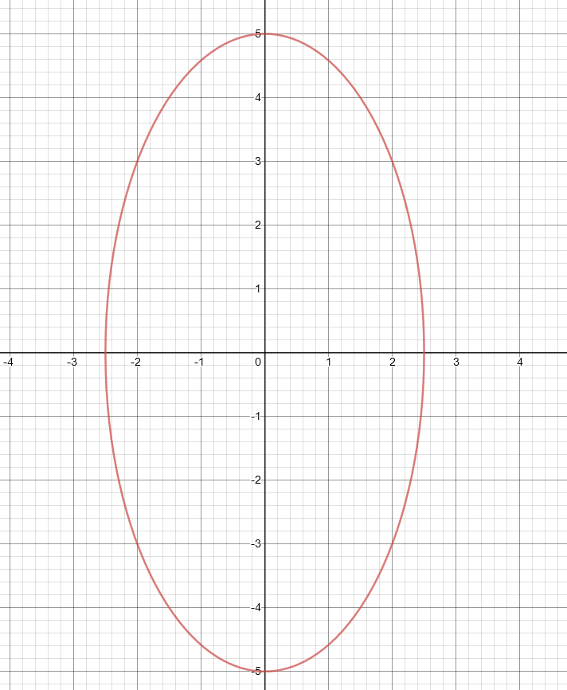

Math Caching
Chapter 1 Functions Review
Jump to clue
Domain - The set of all values of the independent variable of a relation.
Range - The set of all values of the dependent variable of a relation.
Relation - A set of ordered pairs, values of the independent variable are related to values of the dependent
variable.
Function - A relation where each value of the independent variable, corresponds to only one value of the
dependent variable. Functions can be represented in different ways, such as a table of values of a graph.
You can check if a graph is a function by seeing if any vertical lines drawn through it would intercept more
than one point, this shows that there is only one element in the range for each element of the domain.
Function Not a function
Function notation - Notation, such as \(f(x)\) used to represent the value of the dependent variable for a given independent variable, x the input. \(f(x)\) can be read as “f at x”, and is interchangeable with y. \(f(x)=(x+2)^2\) is the same as \(y=(x+2)^2\), f(3) = 25 would mean that at \(x= 3\), f takes the value 25.
Family - All functions are part of a family, a family is a collection of functions that share common
characteristics.
Parent Function - The simplest form of the function in a family.
PARENT FUNCTION TABLE
The domain and range of a function can be determined from a graph, table of values, or the equation. This
can be represented in set notation, e.g. \(\{x\in \mathbb{R} |0 \leq x < 30\}\), this means “the set of all values x
that belong to the set of real numbers, such that x is greater than or equal to 0 and less than 50.” “|”
means such that.
The domain and range of a function will be restrained by the family of the function,
and any real-world restrictions, for example lengths of a square does not make sense.
The inverse of a function is the reverse of the original, it undoes all the operations. It can be
found by doing all the operations in reverse, switch the two variables, and solve for the previously
independent variable.
\begin{aligned}
y&=3x+5\\
x&=3y+5\\
x-5&=3y\\
y&=\frac{x-5}{3}
\end{aligned}
To notate and inverse function, a superscript “-1” is placed above the “f”
\(f^-1\) is the the inverse of function \(f\)
This means that if point (a, b) lies on graph \(y=f(x)\), then (b, a) will lie on graph
\(y=f^-1(x)\). This means that the domain of \(f\) is the range of \(f^-1\) and vice versa.
The graph of the inverse is a reflection of the original function of line \(y=x\)
\(g(x)=af[k(x-d)]+c\) describes a transformation of graph \(f\), the \(f\) represents the parent function, if \(f(x)=x^2\), than \(g(x)=a[k(x-d)^2]+c\)
-
\(a\) - The vertical compression/stretch factor.
When \(|a| > 1\), the graph is stretched vertically by the factor of \(|a|\).
When \(0 < |a| < 1\), the graph is compressed vertically by the factor \(|a|\).
When \(a < 0\), the graph is also reflected on the x-axis. -
\(k\) - The horizontal stretch factor
When \(|k| > 1\), the graph is compressed horizontally by the factor of \(\frac{1}{|k|}\).
When \(0 < |k| < 1\), the graph is stretched horizontally by the factor \(\frac{1}{|k|}\).
When \(k < 0\), the graph is also reflected on the y-axis. -
\(d\) - Horizontal translation
For \(d > 0\), the graph is translated \(d\) units right.
For \(d < 0\), the graph is translated \(d\) units left. -
\(c\)- Vertical translation
For \(c > 0\), the graph is translated \(c\) units up.
For \(c < 0\), the graph is translated \(c\) units down.
When applying transformations to a graph, the stretches, compressions, and reflections are applied first, then the translations.
Math Caching Clue
-
Useful symbols: ∈ ℝ ≠ ≤ ≥
-
State the domain and range of each relation, and wether or not they are a function. Input answers without spaces with special character above, e.g. {x∈ℝ|0<x} or (1,2,3,4)

(1 mark)
(1 mark)
(1 mark)
(1 mark)
(1 mark)
(1 mark)
(1 mark)
(1 mark)
(1 mark)
-
\(f(x)=x^2\) fill in the table for \(-f(2x)-2\)
x y 0 (1 mark) 1 (1 mark) 2 (1 mark) 3 (1 mark)
1.
Not a function, fails vertical line test.
D: {x∈ℝ|-2.5≤x≤2.5}
R: {y∈ℝ|-5≤y≤5}
(3 marks)
Function, passes vertical line test.
D: {x∈ℝ}
R: {y∈ℝ|-6≤y} (remember the vertex)
(3 marks)
Function, passes vertical line test.
D: {x∈ℝ|x≠-5} (remember that a reciprocal function has two lines it will never touch)
R: {y∈ℝ|y≠2}
(3 marks)
2.
If \(f(x)=x^2\) than \(-f(2x)-2 = -(2x)^2-2\)
Plug in the different \(x\) values to get the \(y\) values:
\begin{aligned}
y&=-(2x)^2-2\\
y&=-(2(0))^2-2\\
y&=-2
\end{aligned}
\begin{aligned}
y&=-(2(1))^2-2\\
y&=-6
\end{aligned}
\begin{aligned}
y&=-(2(2))^2-2\\
y&=-18
\end{aligned}
\begin{aligned}
y&=-(2(3))^2-2\\
y&=-38
\end{aligned}
(4 marks)